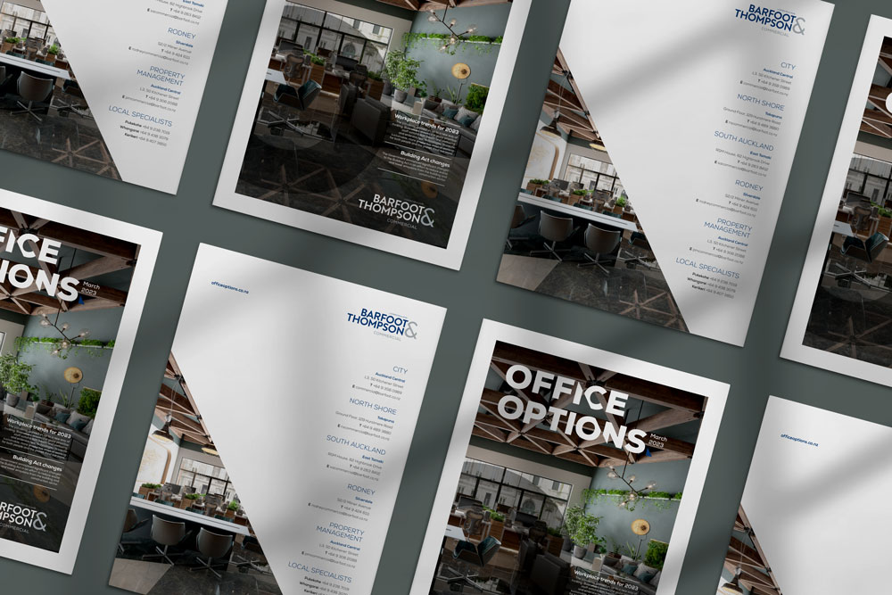
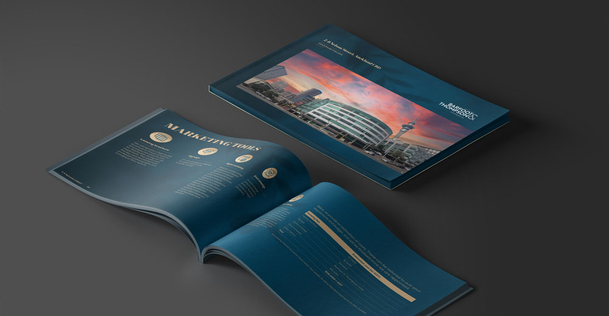
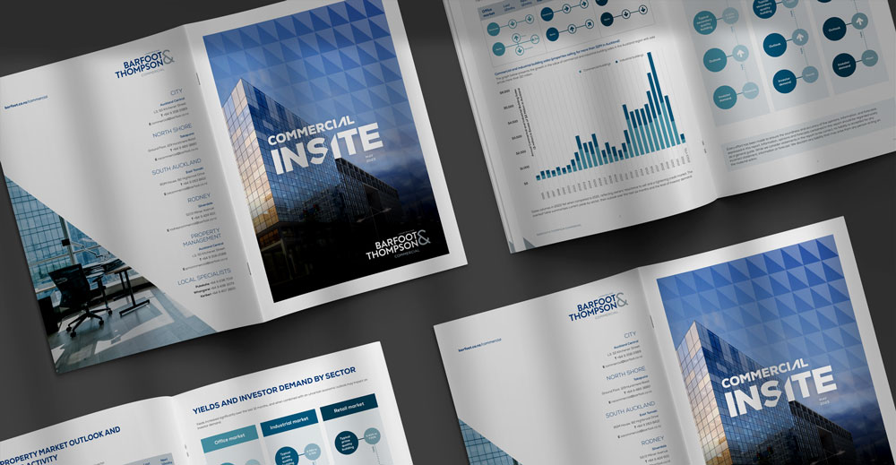
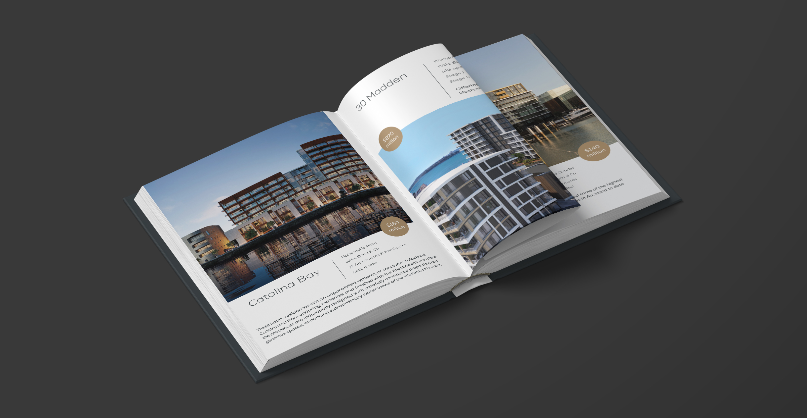

Barfoot & Thompson
Supporting Barfoot & Thompson's ongoing design production — ensuring consistent, on-brand output across 1,800+ salespeople and multiple teams.

The Context
Barfoot & Thompson is New Zealand's largest privately-owned real estate company, with 80+ branches and 1,800+ salespeople across Auckland and Northland.
Their marketing team operates at significant scale — high volume of content across print, digital, and event formats. Multiple stakeholders, branch offices, and output requirements running simultaneously.
They needed a reliable design production resource that could function as a true extension of their in-house team — consistent, experienced, and ready to move at pace.
The Approach
Handled embedded directly into the Barfoot & Thompson marketing team as the primary external design production resource — working alongside the Head of Design and Production.
The arrangement operates as an extension of the in-house team, absorbing ongoing briefs across publications, marketing collateral, commercial materials, and event formats.
A consistent point of contact. Predictable output. No onboarding cycles. No handover friction. Just reliable production capacity that scales with the team's demands week to week.
The Outcome
Consistent, on-brand output across 80+ branches and 1,800+ salespeople. Marketing collateral produced without delays, brand standards maintained across every touchpoint.
The team has a production resource they can rely on — not manage. A working relationship that has continued across multiple years, absorbing increased volume as the business has grown.
The result is a design operation that holds together under pressure, across a large and complex organisation.

In-site Magazine
Salespeople Magazine Marketing Collateral
Marketing Collateral

Marketing Materials.png)
“
Rosh has served as a key strategic partner to Barfoot & Thompson's marketing team, enhancing our workflow with a consistent and high-calibre design resource. Their work safeguards our brand integrity and ensures consistency across a large and complex organisation.
Neal Morshead
Head of Design and Production, Barfoot & Thompson
Start with a Rundown — a focused 45-minute call to look at your current design setup.